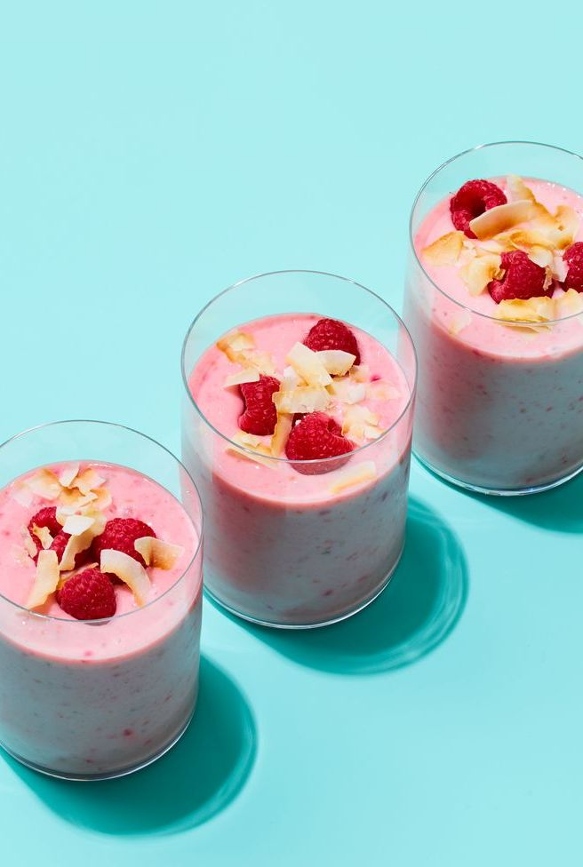

Coconut Raspberry Smoothie

Description
Ditch the bulky blender and whip up this easy smoothie recipe with an immersion blender! Coconut yogurt, frozen raspberries, and bananas create a creamy breakfast or snack treat.
Ingredients
- 1/2 cup low-fat milk
- 1/2 cup low-fat coconut-flavored yogurt
- 2 cups frozen raspberries
- 2 bananas, peeled and cut into pieces
- Toasted coconut and raspberries, for serving
Steps
- Using immersion blender, blend together ilk and coconut-flavored yogurt with frozen raspberries and bananas.
- Serve topped with toasted coconut and raspberries.